Welcome to the Access Oxbridge mentor portal. This is where you accept session requests, run your sessions, write reports for your students and get paid.
This guide shows you what each section is for and how to use it. You don't need to read it all at once. Keep it handy for your first few weeks.
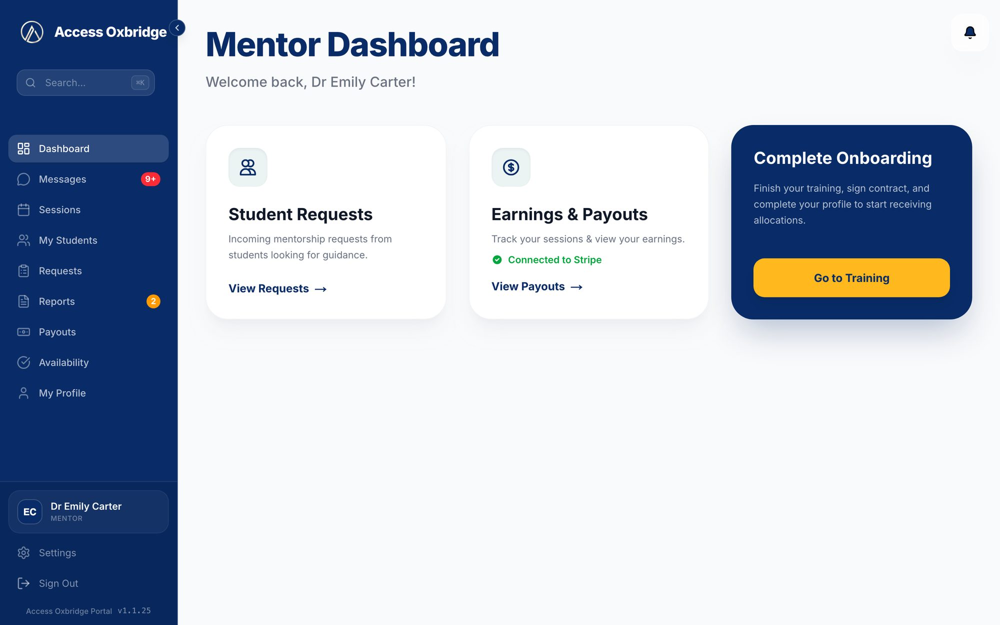
What's inside
Getting started
Finding your way around
Training & Onboarding
Dashboard
Requests
My Students
Messages
Sessions
Requesting a session
Availability
Session reports
Payouts and invoices
My Profile
Settings and getting help
Common questions
1Getting started
Go to the portal and log in with the email address and password for your mentor account. If you forget your password, click Forgot password? on the login page and we'll email you a link to set a new one.
The login page
Your first week checklist
Work through these steps after your first login. Each one is explained in more detail later in this guide.
Finish Training & Onboarding. All six steps, including your contract and payment details.
Check My Profile. Add a photo, a short bio and the subjects you can mentor. Students see this.
Check your timezone. Every session time in the portal is shown in it.
Reply to new requests as soon as you can, so your students can get started.
Introduce yourself to each new student in Messages.
Submit a report after every session.
Good to know
The portal works in any up-to-date web browser on a computer, tablet or phone. We recommend a computer for running sessions and writing reports.
2Finding your way around
Every page has the same layout. Here is what each part does.
123456
1Menu. Links to every section: Dashboard, Messages, Sessions, My Students, Requests, Reports, Payouts, Availability and My Profile. Training sits at the top until you've finished onboarding.
2Badges. A red number on Messages means unread messages. An orange number on Reports means reports waiting for you.
3Dashboard cards. Shortcuts to your requests, payouts and training.
4Notifications. Updates such as a new request or a booked session.
5Your name. Shows who is signed in.
6Settings and Sign Out. Your account settings, and signing out.
On your phone
The menu moves to a bar along the bottom with Dashboard, Sessions, Requests and Messages. Tap More to see everything else.
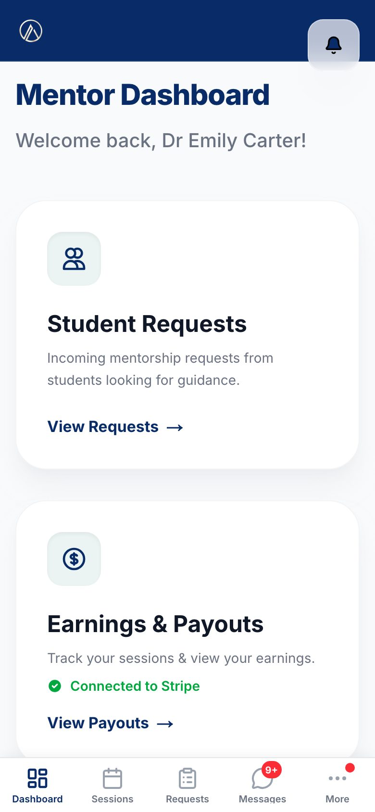
On a phone
3Training & Onboarding
Before you can be matched with students, you need to complete Training & Onboarding. It has six short steps, and a green tick appears on each one as you finish it.
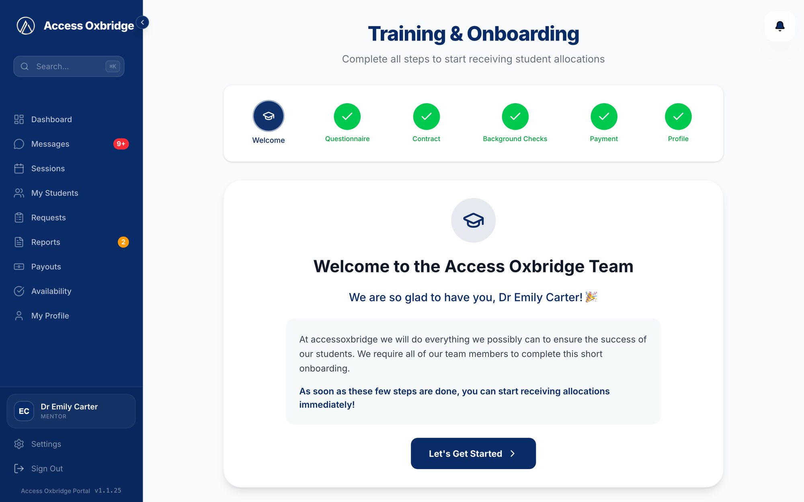
Training & Onboarding
1. WelcomeA short introduction to working with Access Oxbridge.
2. QuestionnaireFour questions about your university, subject, grades and how you like to mentor.
3. ContractRead the Mentor Agreement and sign it by typing your full name.
4. Background ChecksUpload your DBS certificate and confirm the background check statement.
5. PaymentConnect your bank account through Stripe so we can pay you.
6. ProfileAdd your bio, areas of expertise and photo so students can get to know you.
Once all six steps are complete, you can start receiving student allocations.
Read the Mentor Agreement carefully
It covers how sessions work, your fees and payment terms, cancellations, safeguarding and confidentiality. Keep a copy for your records.
4Dashboard
The Dashboard is the first page you see after logging in. It gives you a quick view of what needs your attention.
Student Requests. New requests from students. A red number shows how many are waiting.
Active Sessions. When you have a session coming up, it appears here with a Start button.
Earnings & Payouts. Shows whether your Stripe account is connected, with a link to your payouts.
Complete Onboarding. A shortcut to Training & Onboarding.
The quick check-in after each session
After a session ends, a short check-in appears the next time you open the portal. It asks two questions:
Did you set homework?
Is your next session booked?
If the next session isn't booked yet, click Request a session to propose a time straight away. Click Done when you've answered.
It takes a few seconds and helps us make sure every student keeps moving forward.
Keep the momentum going
The best time to book the next session is at the end of the current one, while you're both still on the call.
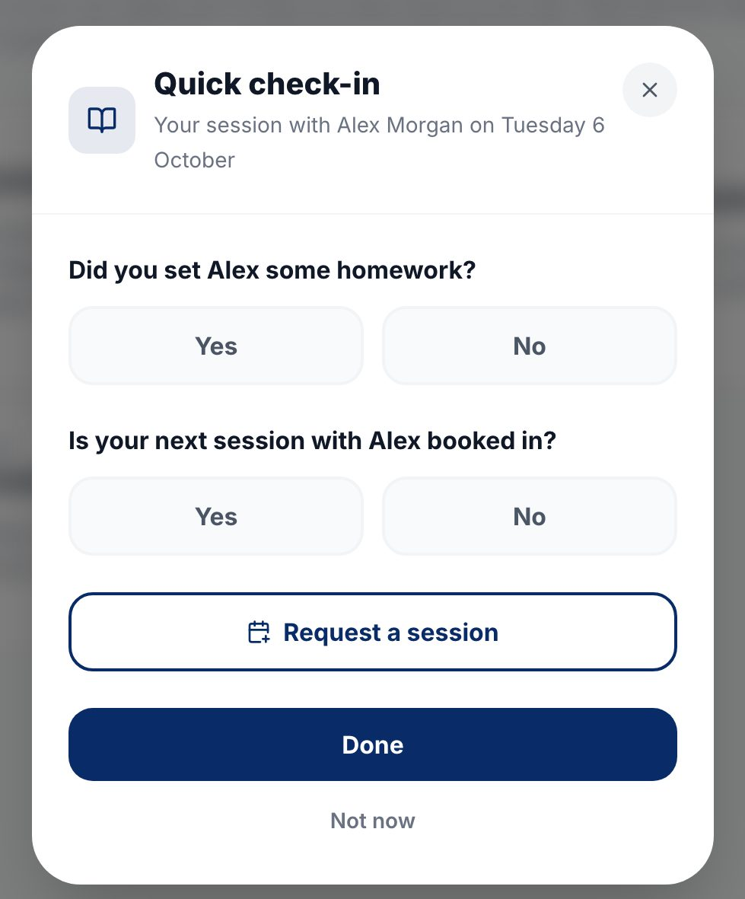
The quick check-in
5Requests
When a student asks to book a session with you, it appears here. Each request shows what you need to prepare: the student's academic interests, extracurriculars, subjects and grades, target universities, curriculum and school, plus the time slots they've offered.
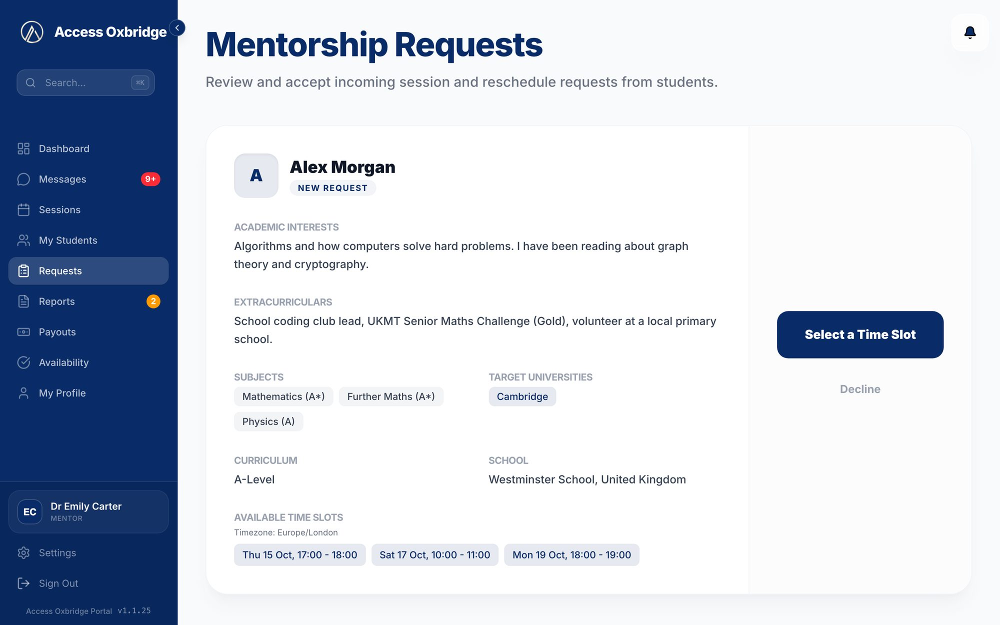
A new request from a student
Accepting a request
Click Select a Time Slot.
Pick one of the student's times.
Click Confirm & Accept. The session is booked and appears in Sessions for both of you.
If none of the times work
Message the student to agree a different time, or click Decline and confirm. Declining can't be undone.
Reschedule requests
If a student asks to move a booked session, the request appears here too. Click Accept New Time to move it, or Decline to keep the original time.
6My Students
Everyone you mentor, in one place. At the top you'll see your totals: active students, sessions completed, upcoming sessions and reports still to write. Use the search box to find a student, or Sort by to reorder the list.
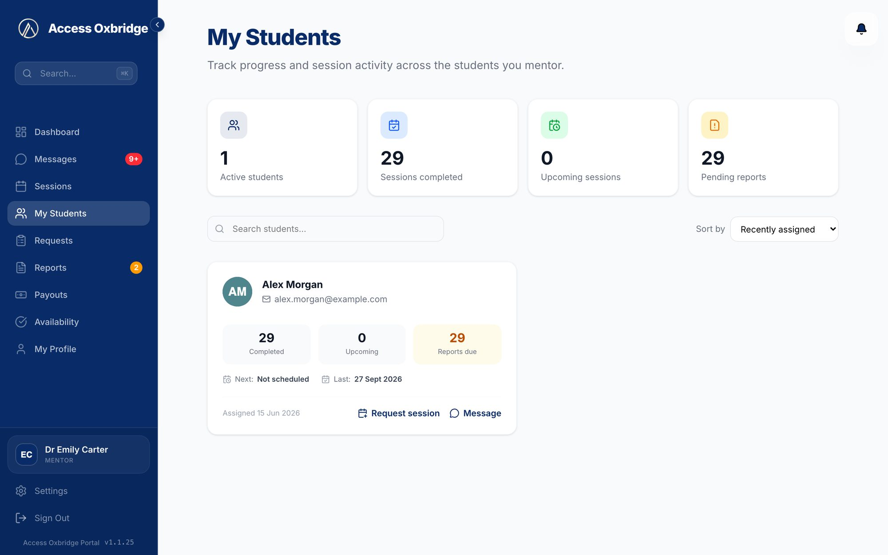
My Students
Each student's card shows how many sessions you've completed together, how many are coming up, how many reports are due, and when your next and last sessions are. From the card you can:
Request session to propose a time for your next session.
Message to open your chat with them.
Reports due
If a card shows reports due, head to Reports and submit them. Your student can't see their personalised report until you do.
Before each session
Take two minutes to read back through your chat with the student and your last report on the Completed tab of Reports. Picking up where you left off makes every session count.
7Messages
Messages is where you talk to your students and to our team.
Each student has their own chat with you.
Some chats are group chats that include you, your student and our team. They are marked Group.
Your Help & Support chat with Claire Marlowe, our Senior Strategist, is where you can ask our team anything.
A red number next to Messages in the menu means you have unread messages.
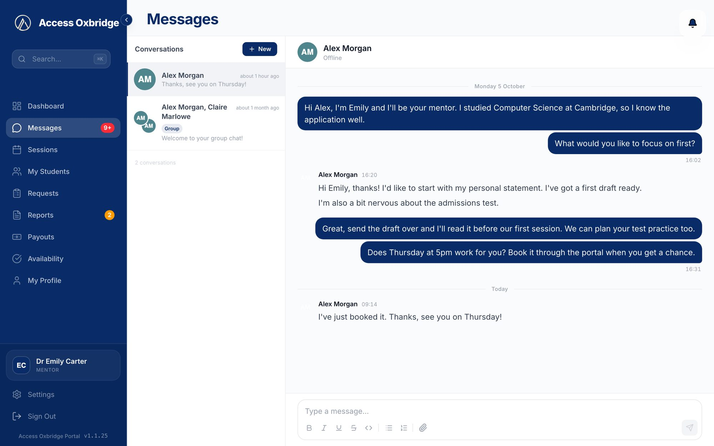
Messages, with a student chat open
Writing a message
Type in the box at the bottom of the chat. The toolbar lets you add bold, italics, lists and more. Click the paperclip to attach a file, such as reading material or a practice question.
Introduce yourself early
Send each new student a short hello as soon as you're matched. Ask what they'd like to cover and invite them to share their personal statement draft before your first session.
8Sessions
All your sessions, split into four tabs:
Pending. Session requests you've sent that are waiting for your student to accept.
Upcoming. Booked sessions, with a Start Session button once the Zoom meeting is ready.
Current. A session that is happening right now.
Completed. Finished sessions, with Submit Report or Report Submitted.
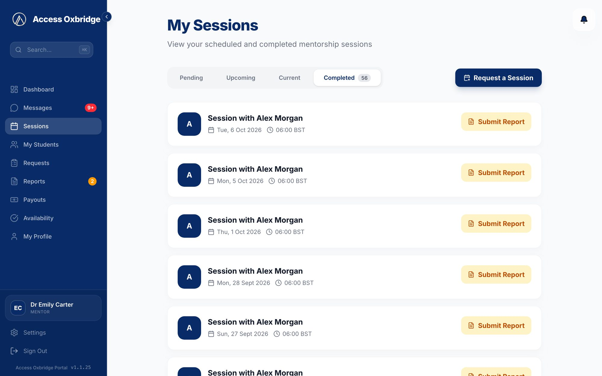
Sessions, showing the Completed tab
Starting a session
Click Start Session to open Zoom as the host. In the hour before the session, the button turns green and shows Starting soon. Always start your sessions from the portal rather than from a saved Zoom link.
Rescheduling
On an upcoming session, click Reschedule, choose a new time and add a short note. Your student needs to accept the new time before it changes.
If your student doesn't join
In the Current tab, click Report and confirm that your student is absent. Only do this once the start time has passed.
9Requesting a session
You can propose a session time to a student yourself. Click Request a Session on the Sessions page, or Request session on a student's card.
Choose the student.
Pick a date, a start time and a length.
Add a short message if you like, for example what you'd like to cover.
Click Send Request.
Your student can accept or decline it from their own Pending tab. Until they do, it waits in your Pending tab, where you can cancel it if plans change.
Times are shown in the timezone set in your profile.
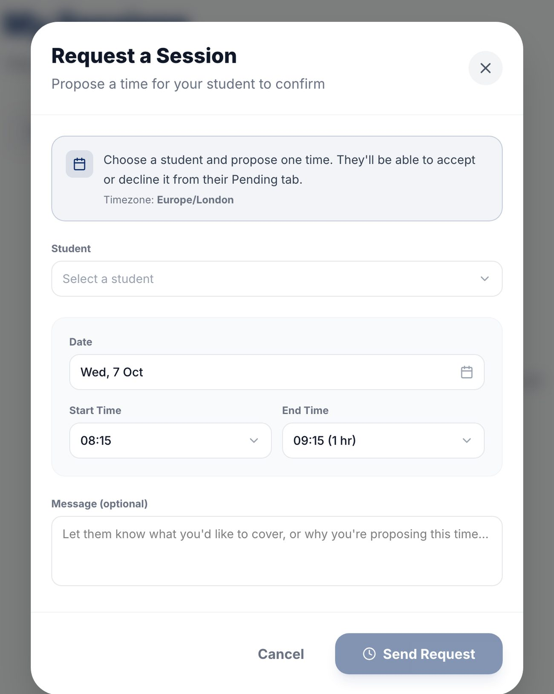
Request a Session
10Availability
A weekly calendar of your booked sessions. Use the arrows to move between weeks, and click a day to see its sessions and start them.
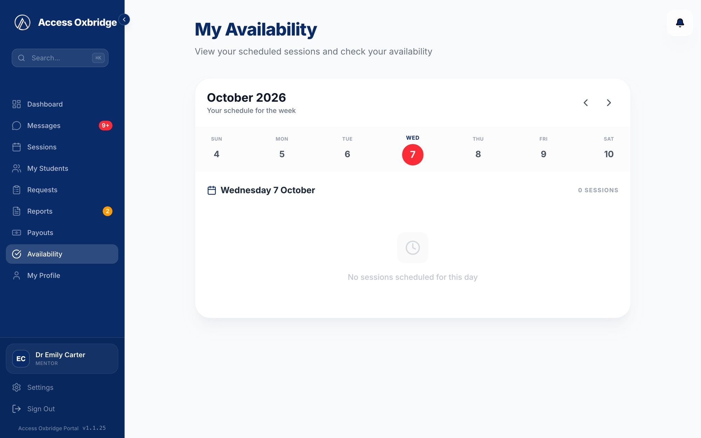
Availability
11Session reports
After every session, please submit a short report. Your answers are used to create a personalised report for your student, which they read on their own Reports page.
The Reports page has two tabs: To Complete for reports still to write, and Completed for reports you've already submitted. You can also submit a report from the Completed tab in Sessions.
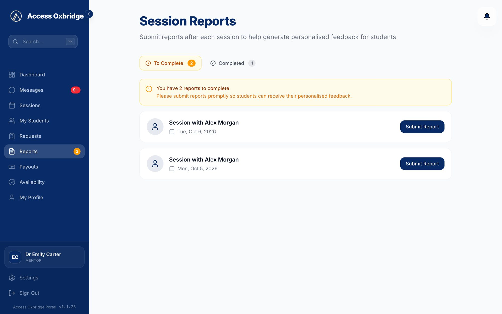
Session Reports
What the report asks
The form has six short steps:
Overall session quality, from 1 to 5.
Student engagement: Low, Medium, High or Excellent.
Topics covered in the session.
Areas for improvement for the student.
Recommended next steps before the next session.
Additional notes (optional).
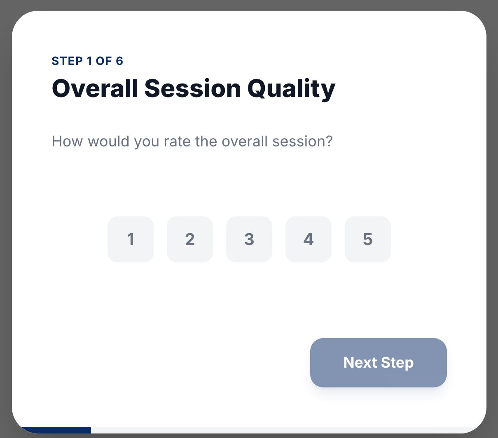
The report form
Write it while it's fresh
Submit your report straight after the session. Be specific about what went well and what to work on next. Your student reads the report that comes from it.
12Payouts and invoices
The Payouts page shows what you've earned and how you're paid.
To Be Paid and Total Paid: money on its way to you, and everything paid so far.
Hourly Rate, Sessions This Month and your Payment Status with Stripe.
Stripe Dashboard: open it to see your transactions, download tax documents and manage your bank account.
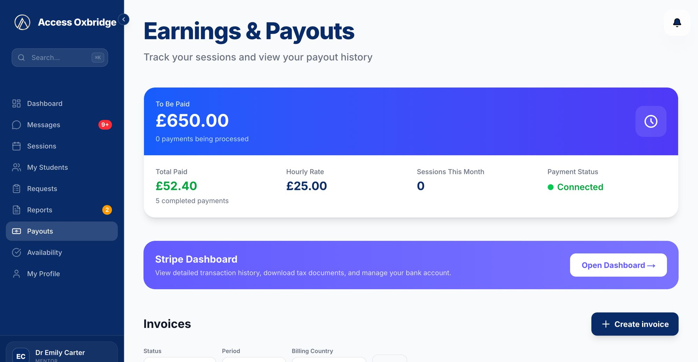
Earnings & Payouts
Sending an invoice
Click Create invoice.
Tick the completed sessions you want to invoice. You need at least 2 hours of sessions.
Click Generate draft and check the invoice.
Click Send to Finance. Once sent, the invoice is locked.
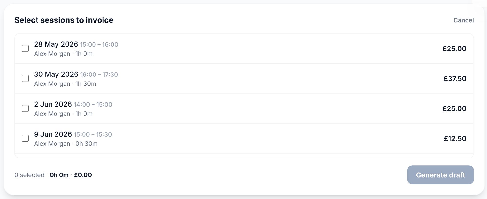
Choosing sessions for an invoice
Your fees and payment terms are set out in your Mentor Agreement. If something looks wrong with a payment, use the report an issue form at the bottom of the Payouts page and our finance team will look into it.
13My Profile
Your profile is what students and our team see, so keep it up to date. At the top you'll see your sessions completed and active students.
Your Details. Your photo, full name, email, phone and university.
Timezone. Every session time in the portal is shown in this timezone.
About You. A short bio that students will see.
Areas of Expertise. The subjects you can mentor students in. Choose at least one.
Click Save Changes when you're done.
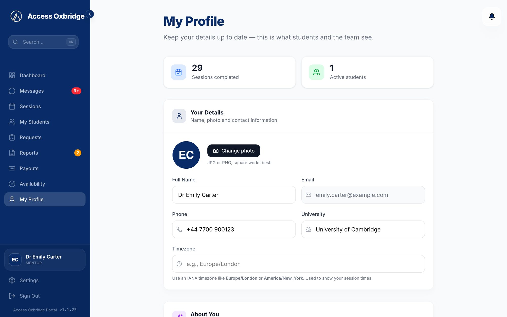
My Profile
Make a good first impression
A clear photo and a friendly bio that mentions your college, subject and how you like to work help students feel at ease before your first session.
Keep your expertise accurate
Your Areas of Expertise tell our team and your students which subjects you cover. Update them whenever they change.
14Settings and getting help
Open Settings from the bottom of the menu. Here you can check your account details, change your timezone and get a link to reset your password by email.
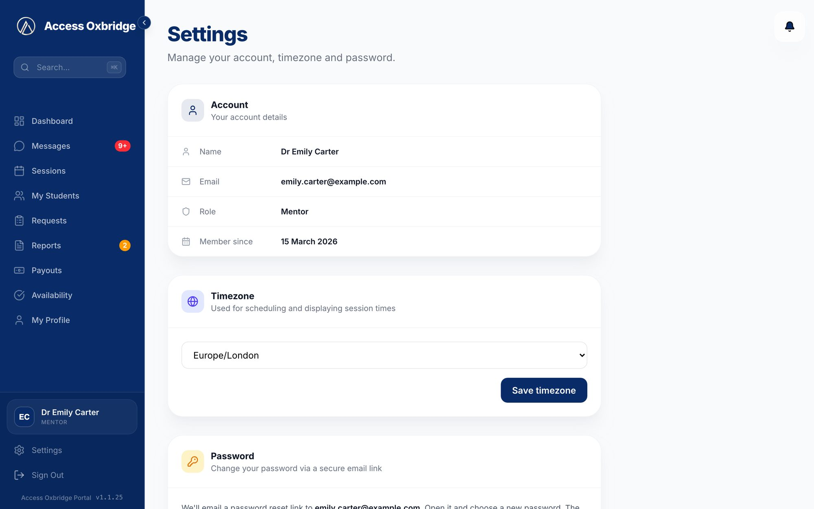
Settings
For help with anything, message Claire Marlowe in your Help & Support chat in Messages. Our team will get back to you there.
15Common questions
Why am I not receiving any students?
Check that all six steps of Training & Onboarding are complete, including your contract and payment details.
None of the student's times work for me.
Message the student to agree a different time, then send them a session request with that time.
How do I start a session?
Click Start Session on the session in Sessions, or from your Dashboard. Always start from the portal.
My student hasn't joined.
Once the start time has passed, go to the Current tab in Sessions, click Report and confirm.
How do I get paid?
Connect Stripe during onboarding, then send invoices for your completed sessions from the Payouts page.
If you have any questions about the portal or anything in this guide, get in touch at any point. Thank you for helping our students reach Oxford and Cambridge.